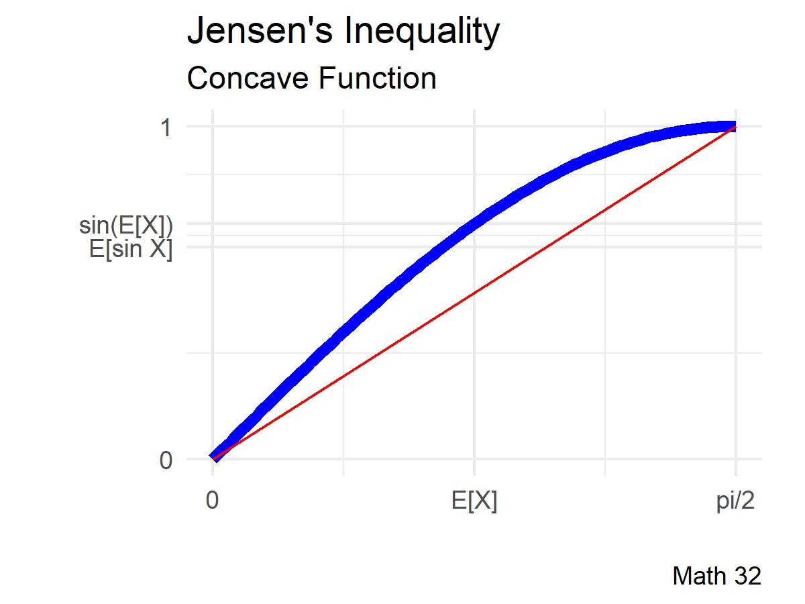
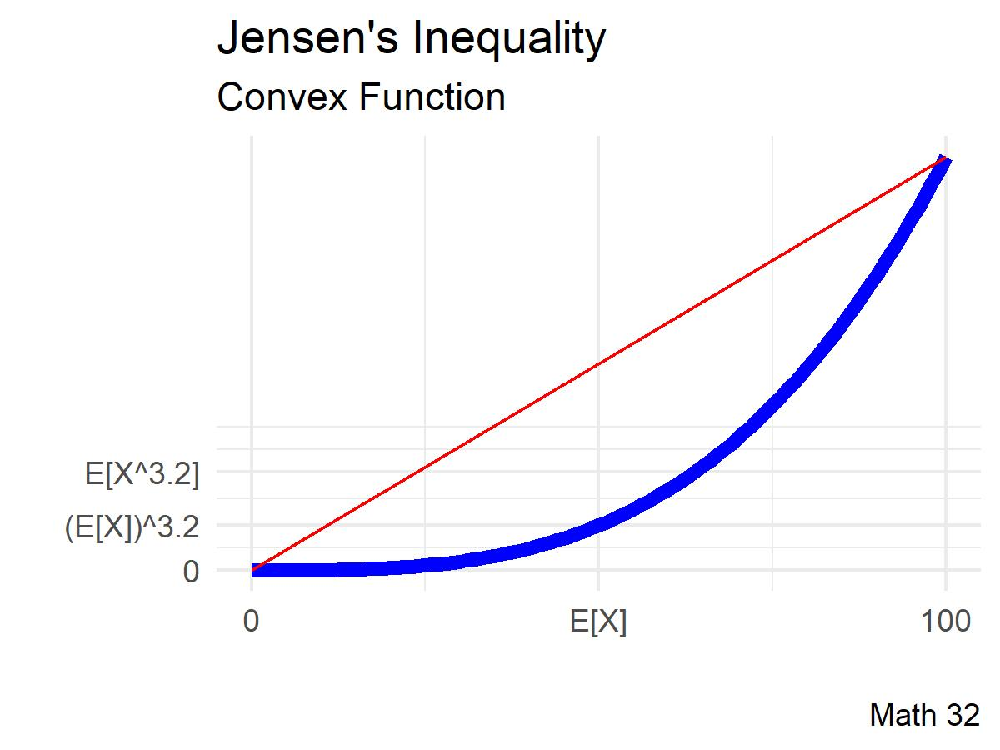
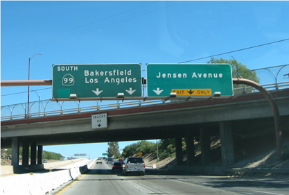

Linear Conversion
Let \(F\) be the daily high temperature in Fahrenheit in Merced, California, with a mean of 76 degrees and a standard deviation of 15 degrees. Compute those sample statistics in Celsius.
We know that the conversion formula is
\[C = \displaystyle\frac{5}{9}(F - 32)\]
Range Rule of Thumb
Recall
- About 67 percent of data falls within one standard deviation of the mean
- About 95 percent of data falls within two standard deviations of the mean
\[\left( \mu - 2\sigma, \mu + 2\sigma \right)\]
We had computed
- \(\mu_{F} \approx 76\) and \(\sigma_{F} \approx 15\) degrees Fahrenheit
- \(\mu_{C} \approx 24.4444\) and \(\sigma_{C} \approx 8.3333\) degrees Celsius
Build range-rule-of-thumb intervals for the Merced high temperatures in Fahrenheit and in Celsius.
Distributions
Determine the distribution and density functions for
\[Y = \displaystyle\frac{5}{9}(X - 32)\]
Change of Coordinates
Let \(X\) be a continuous random variable with distribution function \(F_{X}\) and density function \(f_{X}\). If we apply a linear transformation
\[Y = aX + c\]
where \(a >0\) and \(c\) are constants, then
\[F_{Y}(y) = F_{X}\left(\displaystyle\frac{y - c}{a}\right) \text{ and } f_{Y}(y) = \displaystyle\frac{1}{a}f_{X}\left(\displaystyle\frac{y - c}{a}\right)\]
If \(X \sim Exp(1/2)\), then what kind of distribution does \(Y = 32X\) have?
Nonlinear Transformations
Let \(X \sim U\left(0, \displaystyle\frac{\pi}{2}\right)\) and \(Y = \sin(X)\).
Compare \(\text{E}[\sin X]\) and \(\sin(\text{E}[X])\)

Suppose that a disease outbreak can be modeled where \(X\) is the population density of a city and \(Y\) is the number of diagnosed cases with
\[X \sim U(0,100), \quad Y = X^{3.2}\]
Compare \(\text{E}[X^{3.2}]\) and \(\left(\text{E}[X]\right)^{3.2}\)

The previous two examples were demonstrations of , which states that
- If \(g\) is a convex function of random variable \(X\), then
\[g(\text{E}[X]) \leq \text{E}[g(X)]\]
- If \(g\) is a concave function of random variable \(X\), then
\[g(\text{E}[X]) \geq \text{E}[g(X)]\]
where the equal signs are not included when the function \(g\) is strictly convex or strictly concave.
Looking Ahead
- due Fri., Oct. 28:
- WHW8
- LHW8
- Exam 2 will be on Tues., Nov. 1
- more info in weekly announcement
- Math 32 discussion sections on Oct. 31 are optional
- canceled for Nov. 2
